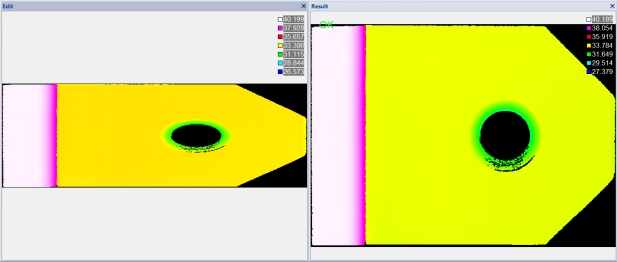

仿射采样工具主要对输入深度图像仿射矩形区域内的图像进行采样，输出矩形图像，以便对其进行后续处理。
“自动确定-分辨率一致”使用场景：
在3D项目应用中，对于线扫描类的3D传感器，由于需要满足采集速度或精度的需求，会存在扫描图像的X、Y方向的分辨率不相等的情况，此时采集的的深度图像，会表现为某一个方向的拉伸会压缩，图像发生形变。使用点云仿射采样工具，可纠正这种形变，使图像正常。如图2所示。

| 分类 | 参数名称 | 参数描述 |
|---|---|---|
| 属性窗口 | ROI类型 | 可选“整幅图像”，“矩形ROI”,“仿射矩形ROI” |
| 采样模式 | 选择“手动采样”，则需用户输入采样后的深度图像的宽高，并以此重新计算深度图像的X、Y分辨率。选择“自动确定-分辨率一致”，则根据原图像的X、Y分辨率中较小的一个进行采样，并重新计算深度图像的宽高。选择“自动确定-保持缩放”，则根据ROI的大小进行采样，结果图像大小与其一致。 | |
| 采样后图像宽度 | 采样后的深度图像的宽度。 | |
| 采样后图像高度 | 采样后的深度图像的高度。 | |
| 开启并行运算 | 是否开启并行运算，选择是时，算法将开启OpenMp并行计算方式，可以提升计算速度，但可能出现耗时不稳定的情况，选择否时，算法将关闭OpenMp并行计算。 | |
| 线程数百分比 | 设置并行运算的线程数百分比，有效范围为 (0, 0.75]，对应表示(0%, 75%]百分比范围。 | |
| 图像窗口 | 输入深度图像 | 显示待变换的深度图像。 |
| 数据链 | 输入深度图像 | 输入待变换的深度图像。 |
| 二维线性变换 | 目标相对于模板的平移、旋转、缩放变换。 | |
| 高级界面 | 无 | 无 |
| 分类 | 参数名称 | 参数描述 |
|---|---|---|
| 监视窗口 | 输出深度图像 | 输出深度图像的长宽和像素大小，以及深度数据参数。 |
| 执行结果 | 工具执行结果。 | |
| 执行时间 | 工具执行时间。 | |
| 图像窗口 | 输出深度图像 | 显示工具执行结果图像，同监视窗口的输出深度图像参数。 |
| 执行结果 | 显示工具执行结果，执行成功显示“OK”，执行失败显示“NG”，同监视窗口的执行结果参数。 | |
| 数据链 | 输出深度图像 | 输出的采样之后的深度图像，供其他工具使用。 |
无
无
参见“\Samples\3D\深度图\点云仿射采样工具.gvp”。